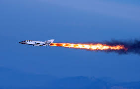
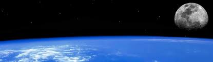

Biography
Tereshkova was one of four women picked to be cosmonauts, but only she went to space. The Vostok 6 was launched into space on June sixteenth, 1963. That was when she became the first woman in space!
She exclaimed, "Hey sky, take off your hat. I'm on my way!" as the Vostok 6 took off.
She orbited the earth 48 times in 70.8 hours! That was more than anyone else at the time!
After her travel, she married Andrian Nikolayev, another cosmonaut.
Although she was successful in the trip, it took a whole 19 years before Svetlana Savitskova, another female, to travel into space.
